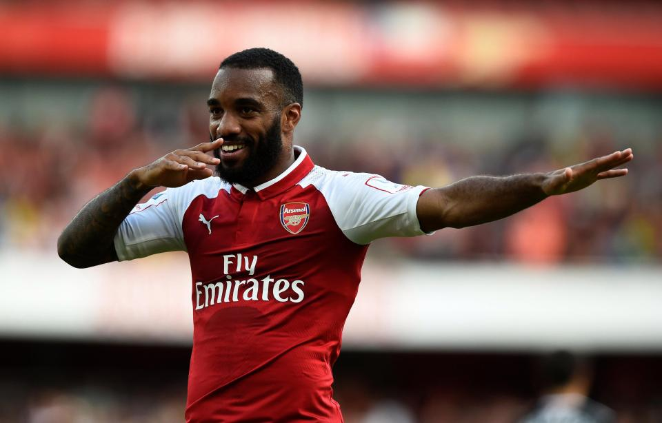

The main point of conversation during Arsenal’s 2016/17 campaign was the future of Arsene Wenger. Constant protests from fans and criticism from the media may have overshadowed how Arsenal actually performed last season. Arsenal failed to do what they have done the past decade and missed qualification into the Champions League. A fifth place finish was all the Gunners could manage; one point behind Liverpool.
Arsenal’s biggest problem for years has been their lack of a true world-class number 9. Olivier Giroud has been a great serviceman for the club, but has failed to score enough goals to bring a title to the Emirates.
They have Danny Welbeck in their ranks, but he also lacks goals and isn’t a 20-a-season player – a fact that Louis Van Gaal knew when selling the Welbeck to Arsenal from Manchester United. While Alexis Sanchez, a world class player in his own right, has played up front his natural position is out on the wing with a striker up front to create for and combine with. This man is Alexandre Lacazette.
Alexandre Lacazette is poised to terrorise defences alongside the likes of Mesut Ozil and Alexis Sanchez with Arsenal.Lacazette has made a strong start to life at Arsenal following his transfer from French side Lyon back in the summer transfer window.
Although there have been major issues in defence and with injuries, Arsenal’s biggest weakness is an off-pitch factor. Their major weakness seems to be unity between the club, the manager, and their fans.
Throughout the entirety of last season, unrest between the club and its supporters was a huge hindrance to Arsenal’s on-field performances, as it seems the manager does not handle pressure well. Wenger himself has admitted the saga over his contract extension may have negatively impacted the contract situation with Alexis Sanchez & Mesut Ozil. How big an impact have the fans had on Wenger’s contract situation? Seems to be a vicious cycle that’s doing the Gunners no favours.
Arsenal fans accuse Wenger of mishandling players,not playing the right team.There's no unity with a large number of fans wanting the manager to get sacked.
New season, same old Arsenal...
BIG GAME WOBBLES The tactical naivety has a clear knock-on effect with results. Arsenal's away record against the established top six teams is simply dire.
Arsenal would be hoping to finish in the top 4 to get champions league football next season